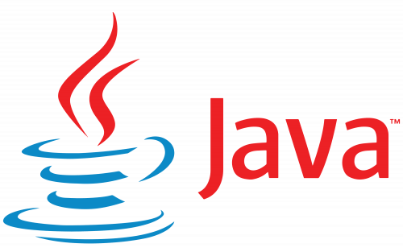
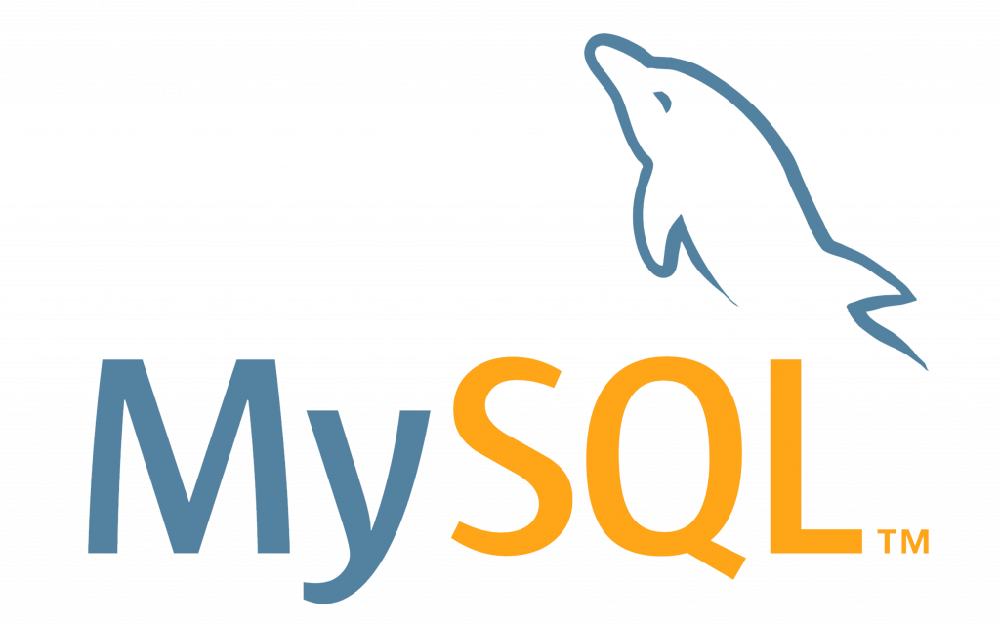
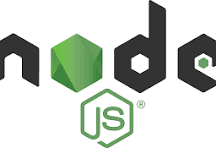

Hello, I'm Atul Vinod
A passionate software developer with a focus on innovative solutions in cybersecurity and decentralized applications. Explore my work and get in touch!
Contact MeAbout Me
Hello! I'm Atul Vinod, a dedicated and passionate software developer with a strong background in computer science. My journey in technology has been driven by an insatiable curiosity and a desire to create impactful solutions that make a difference.
Education
I hold a degree in Computer Science, where I gained a solid foundation in software engineering, algorithms, and data structures. My academic background has been complemented by hands-on experience through various projects and internships.
Skills and Expertise
I specialize in full-stack development, machine learning, and cybersecurity. Over the years, I have honed my skills in several key areas:
- Programming Languages: Python, Java, JavaScript
- Frameworks and Libraries: Flask, Node.js, TensorFlow, Scikit-Learn
- Web Technologies: HTML/CSS, Bootstrap, React
- Database Management: MySQL, MongoDB
- Tools and Platforms: Git, Docker, AWS
Projects
I am particularly proud of my work on Decentralized Web Authentication, where I developed a secure authentication system using blockchain technology. Another notable project is Insider Threat Detection, a machine learning-based system designed to identify and mitigate security threats in organizational networks.
Passion and Goals
I am deeply passionate about leveraging technology to solve real-world problems. My goal is to continue expanding my expertise, particularly in the areas of artificial intelligence and cybersecurity, and to contribute to innovative projects that address complex challenges.
Outside of Work
When I'm not coding, I enjoy exploring new technologies, contributing to open-source projects, and participating in tech meetups and hackathons. I also have a keen interest in environmental sustainability and have been involved in local cleanup initiatives.
Projects
Decentralized Web Authentication
Developed a decentralized authentication system using Ethereum blockchain and MetaMask. Integrated with Flask for the web application backend and IPFS for decentralized storage. This project focuses on enhancing security and privacy in digital authentication processes.
View on GitHubInsider Threat Detection using Machine Learning
Implemented a system to detect insider threats within organizational networks using machine learning techniques. This project leverages Python and machine learning algorithms to identify and mitigate potential security threats from internal sources, enhancing organizational security.
View on GitHubSkills

Python

Java

Linux

MySQL
Flask

Node.js

Scikit-Learn
TensorFlow

HTML

CSS

JavaScript
Contact
If you’d like to collaborate or have any inquiries, feel free to reach out:
Email: atulvinod01@gmail.com
LinkedIn: Atul Vinod
GitHub: github.com/atulvinod01